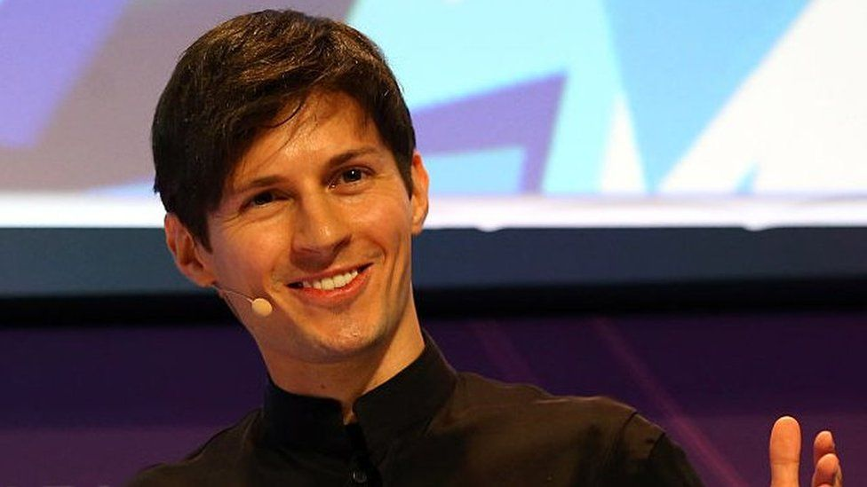

The Tech Maverick: Pavel Durov, the visionary who illuminated the digital realm. |
|  |
Biography
În ciuda interesului său pentru programare, Durov a intrat la Facultatea de Filologie a Universității de Stat din Sankt Petersburg, cu specializarea în filologie engleză și traducere. În timp ce studia la universitate, a primit diverse burse de la președinte, guvern și Fundația Potanin
La departamentul de filologie, s-a împrietenit cu Ilya Perekopsky, un student pragmatic și ambițios care, ca și el, iubea filmul „Matrix”. Împreună cu el s-a gândit la primele proiecte pe Internet. Acestea au fost portalul durov.com (pentru studenții la filologie cu răspunsuri la întrebările de la examen) și comunitatea universitară spbgu.ru (forum pentru studenții și absolvenții Universității de Stat din Sankt Petersburg). [4] „Când am descoperit prima dată internetul, am fost uimit că poți crea un site web și alți oameni veneau și își publicau propriul conținut pe acesta”, a spus Durov.
Achievements
- Co-fondator al rețelei de socializare VKontakte (VK), cel mai popular site de socializare din Rusia și din Europa de Est.
- Creator al aplicației de mesagerie Telegram, cunoscută pentru securitatea și confidențialitatea mesajelor.
- Dezvoltarea TON (Telegram Open Network), un proiect blockchain ambitios, cu intenția de a crea o platformă descentralizată.
- Activism pentru drepturile digitale și libertatea online, inclusiv opoziția față de cenzură și supraveghere.
- Implicarea în proiecte de caritate și sprijin pentru libertatea presei și drepturile omului.
Curiozități despre Pavel Durov
- Este cunoscut pentru abordarea sa privată și retrasă, având o prezență limitată în mass-media și pe rețelele sociale.
- În timpul studiilor universitare, a creat prima versiune a VKontakte (VK) împreună cu fratele său, Nikolai Durov.
- Este pasionat de tehnologie și filozofie, fiind cunoscut pentru ideile sale privind libertatea individuală și inovația.
- A fost implicat în diverse controverse legate de cenzură și reglementări guvernamentale, în special în Rusia.
- În prezent, locuiește în afara Rusiei din motive de securitate personală și pentru a evita presiunile guvernamentale asupra activităților sale.
Un citat al lui Pavel Durov
"Internetul este ultima insulă liberă. Păstrează-o așa!"